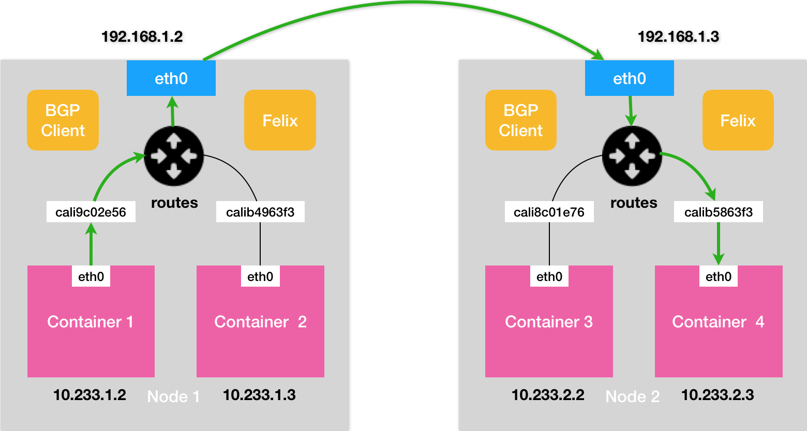

每个Pod都有自己唯一的IP地址，可以通过一个扁平的、非NAT网络和和其他Pod进行通信。
同节点pod通信
基础设施容器启动之前，会为容器创建一个虚拟的Ethernet接口对（一个veth pair），其中一个对的接口保留在主机的命名空间中，其他的对被移入到容器网络命名空间当中，并重命名为eth0。
主机网络命名空间的接口会绑定到容器运行时配置使用的网络桥接上，从网桥的地址段中取IP地址赋值给容器中的eth0接口。任何运行在容器内部的程序都会发送数据到eth0网络接口，数据从主机命名空间的另一个veth接口出来，然后发送给网桥。任何连接到网桥的网络接口都可以接收该数据。
同一节点上的容器都会连接到同一个网桥，因此它们之间能够相互通信。但是要让不同节点上的容器之间能够通信，这些节点的网桥需要以某种方式连接起来。
不同节点上的pod通信
在 Docker 的默认配置下，不同宿主机上的容器通过 IP 地址无法做到进行互相访问，为了解决该问题，就需要使用到网络容器接口。
网络容器接口
为了让连接容器到网络更加方便，CNI允许Kubernetes可配置使用任何CNI插件。这些插件包含Calico、Flannel、Romana、Weave Net等等。
Flannel
Flannel支持三种后端实现
- VXLAN
- host-gw
- UDP
UDP模式
UDP模式是Flannel项目最早支持的模式、最直接、最好理解，也是性能最差的模式。Flannel通过在宿主机上创建出一系列的路由规则，将路由转发到一个叫做flannel0的设备当中去。
flannel0设备是一个TUN设备，是一种工作在网络层的虚拟网络设备，负责在操作系统内核与应用程序之间传递IP包。当一个IP包发送给TUN设备时，会将这个IP包交给创建这个设备的应用程序。反之创建该设备的应用程序向TUN设备发送一个IP包时，这个IP包就会出现在宿主机网络栈中，根据路由表进行下一步的处理。
在由Flannel管理的容器网络中，一台宿主机上的所有容器，都属于被宿主机分配的一个子网，这些子网与宿主机的对应关系保存在Etcd当中。因此flannel进程在处理传入的IP包时，就可以根据目的IP地址匹配到对应的子网，然后从Etcd当中找到这个子网对应的宿主机IP地址。每台宿主机上的flannel进程都监听着8235端口，在知道了对方的IP地址以后，就会把这个IP包封装到UDP包中，然后发送给对方的8235端口即可。对方宿主机的flannel进程收到该包以后，会把这个IP包发送给它所管理的TUN设备，最后通过本机的路由表发送给对应的容器。
Flannel的UDP模式提供了一个三层的Overlay网络，对发送端的IP包进行UDP封装，在接收端解封拿到原始的IP包，进而把这个包转发给目标容器。但是UDP模式存在严重的性能问题，因为相比于直接通信，基于Flannel UDP模式的容器通信多了flannelId的处理过程，在使用过程中需要经历三次用户态与内核态之间的数据拷贝。

VXLAN 模式
VXLAN（虚拟可扩展局域网）是Linux内核本身就支持的一种网络虚拟化技术，可以完全在内核态实现上述的封装与解封过程，通过与UDP相似的机制构建出Overlay网络。
VXLAN在现有的三层网络之上，覆盖一层虚拟的、由内核VXLAN模块负责维护的二层网络，使得连接在这个VXLAN二层网络上的主机之间，可以想在同一个局域网（LAN）里面那样自由通信。
VXLAN会在宿主机上设置一个特殊的网络设备作为隧道的两端，这个设备叫做VTEP。该设备的作用是进行封装和解封装二层数据帧。其工作的执行流程全部是在内核里面完成。
为了能够将原始IP包封装并且发送到正确的宿主机当中，需要知道目的宿主机的VTEP设备。该设备的信息由每台宿主机上的flanneld进程负责维护。当一个节点Node启动并加入到Flannel网络当中后，在其他所有节点上，flanneld会添加一条路由规则，将数据包转向该节点。
为了让就要想办法把“原始 IP 包”加上一个目的 MAC 地址，封装成一个二层数据帧，在此时还需要知道目的 VTEP 设备的 MAC 地址。通过IP地址查找MAC地址是ARP表的功能，这里需要使用到的ARP表是flanneld进程在一个节点启动时自动添加在其他所有节点上的。
有了目的VTEP设备的MAC地址以后，Linux内核就可以开始二层封包工作了，封装出来的称为内部数据帧。此时还需要再把内部数据帧进一步封装成为宿主机网络里面的一个普通数据帧，这次封装出来的称为外部数据帧。
为了封装外部数据帧，Linux内核会在内部数据帧的前面加上一个特殊的VXLAN头，用来表示这个一个VXLAN要使用的数据帧。其中VXLAN头内部有个重要的标志叫做VNI，是 VTEP 设备识别某个数据帧是不是应该归自己处理的重要标识。在 Flannel 中，VNI 的默认值是 1。然后，Linux 内核会把这个数据帧封装进一个 UDP 包里发出去。
与UDP模式类似，在宿主机看来会以为自己的 flannel.1 设备只是在向另外一台宿主机的 flannel.1 设备，发起了一次普通的 UDP 链接。不会认为这个UDP包里面是一个完整的二层数据帧。
但是此时仍然不知道对应的宿主机地址，在这种场景下，flannel.1设备需要扮演一个网桥的角色，在二层网络上进行UDP包的转发。在Linux内核里面，网桥设备进行转发的依据，来自于一个叫作FDB的转发数据库。flannel.1网桥对应的 FDB 信息，也是 flanneld 进程负责维护的。

host-gw模式
host-gw模式的工作原理就是将每个Flannel子网的下一跳设置为该子网对应的宿主机的IP地址。Flannel子网和主机的信息都是保存在Etcd当中的，因此flanneld只需要WATCH这些数据的变化，然后实时更新路由表即可。
在这种模式下，容器通信的过程就免除了额外的封包和解包带来的性能损耗。但是Flannel的host-gw模式要求宿主机之间必须是二层连通的。

Calico
不同于Flannel通过Etcd和宿主机上的flanneld进程来维护路由信息的做法，Calico项目使用了BGP来自动的在整个集群中分发路由信息。
BGP是一种外部网关路由协议，通过在边界网关上利用TCP将各自的路由表传输给其他的边界网关。其他边界网关收到这些数据时，就会进行分析，将自己需要的信息添加到自己的路由表中。
Calico项目的架构有三个部分组成
- Calico的CNI插件。作为Calico与Kubernetes对接的部分。
- Felix。是一个DaemonSet，负责在宿主机上插入路由规则以及维护Calico所需的网络设备。
- BIRD。BGP的客户端，负责在集群中分发路由信息。
Calico的CNI插件会为每个容器设置一个Veth Pair设备，然后把其中的一端放置到宿主机上。同时在每个宿主机上为每个容器的Veth Pair设备配置一条路由规则，用于接收传入的IP包。
有了这些Veth Pair设备以后，容器发出的IP包就会经过Veth Pair设备出现在宿主机上，然后宿主机网络栈就会根据路由规则的下一跳IP地址，把它们转发给正确的网关，接下来的流程就与 Flannel host-gw模式完全一致了。
其中的路由规则由Calico的Felix进程负责维护。这些路由规则信息，则是通过BIRD组件使用BGP传输而来的。

Calico维护的网络在默认配置下，使用的是“Node-to-Node Mesh”模式。此时每台宿主机上的BGP client都需要跟其他所有结点的BGP client进行通信以便交换路由信息。随着节点数量的增长，连接数量会与N2的规模快速的增加给集群网络带来巨大的压力。
在更大规模的集群中，需要使用到Router Reflector的模式。在这种模式下Calico会指定一个或几个专门的节点来负责与所有的BGP建立连接，从而学习到全局的路由规则。其他节点，只需要跟这几个专门的节点交换路由信息，就可以获得整个集群的路由规则信息了。
同样的对于Calico来说，也要求集群宿主机之间是二层连通的。但是可以通过开启IPIP模式模式进行解决。
在IPIP模式下，会使用到一个tunl0设备将IP包发送出去。tunl0设备是一个IP隧道设备，IPIP驱动在IP包进入IP隧道设备以后，将IP包封装在一个宿主机网络的IP包中。接收方收到IP包后，使用IPIP驱动进行解包，从而拿到原始的IP包。然后原始的IP包就会经过路由规则和Veth Pair设备到达目的容器内部。

Service实现原理
Service是由kube-proxy组件加上iptables来共同实现的。
在开始的时候，kube-proxy确实是一个proxy，对于每个进来的连接，会连接到一个pod，这被称为userspace（用户空间）代理模式。后来性能更好的iptables模式代替了userspace模式。
当一个Service被提交给Kubernetes，kube-proxy就可以通过Service的Informer感知到这样一个Service对象的添加，之后再宿主机上创建一条iptables规则。因为这只是一条iptables规则，并没有真正的网络设备，所有无法ping通这个地址。
对于即将跳转到的规则，是一组随机模式的iptables链，随机转发的目的地是Service代理的多个Pod。这里也就是Service实现负载均衡的位置。
这样通过Service VIP的IP包1经过上述iptables处理之后，就已经变成了访问具体某一个后端Pod的IP包。这些iptables规则，是kube-proxy通过监听pod的变化事件，在宿主机上生成并维护的。